奧林匹克運動會-歷史
奧林匹克運動會，奧運，世界最高等級的國際綜合體育賽事，由國際奧林匹克委員會主辦，每4年舉行一次。從1994年起，冬季奧運會和夏季奧運會分開，相隔2年交替舉行。 奧林匹克運動會最早起源於古希臘，是當時各城邦之間的公開較量，因為舉辦地在奧林匹亞而得名。信奉基督教的羅馬皇帝狄奧多西一世以奧林匹克運動會崇拜耶穌以外神衹為由，禁止奧運競技，於是奧運在舉辦超過1,000年後於4世紀末停辦，直到19世紀末才由後人發現遺蹟。 之後，法國的顧拜旦男爵皮耶·德·古柏坦創立了有真正奧運精神的現代奧林匹克運動會，自1896年開始每4年舉辦一次，更確立了會期不超過18日的傳統。 現代奧運會只在兩次世界大戰期間合共中斷過5次，以及在2020年因嚴重特殊傳染性肺炎大流行延期過一次
今年2024:巴黎奧運
3大亮點：
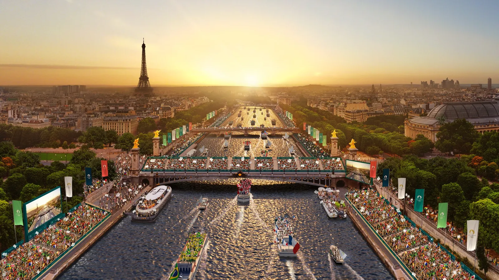
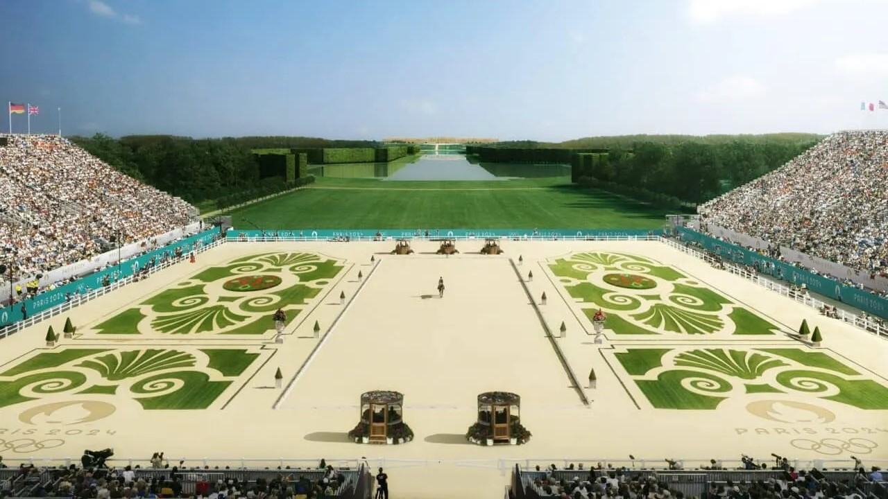
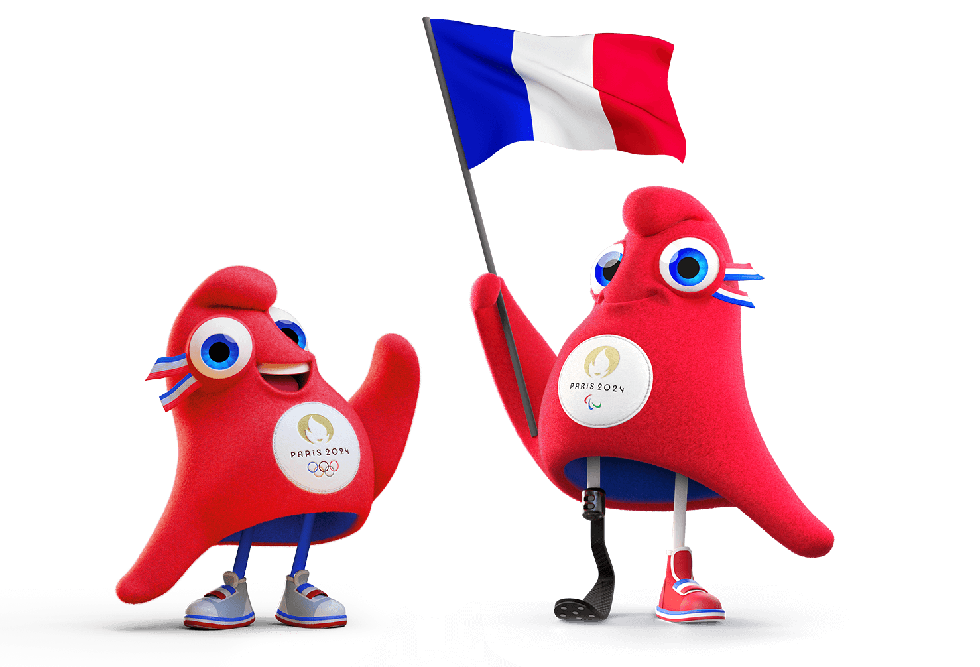
| 本屆巴黎奧運承襲東奧「環保減碳」理念，奧委會打破傳統， 使用城市現有的體育場館，並在各個巴黎地標旁搭建臨時場地，包含菲爾鐵塔前的耶拿橋、戰神廣場，還有巴黎大皇宮、凡爾賽宮！ | 巴奧這回史無前例把開幕式搬離主場館，移師塞納河舉行！不僅各國選手將會搭乘船隻出場，也是觀眾首次能現場參觀開幕典禮 | 弗里吉 Phryge 採用源自法國國旗的藍、白、紅三色，胸前鑲嵌金色 2024 巴黎會徽。設計靈感源自象徵自由的「弗里吉亞帽 Phrygian cap」 ，又稱「自由之帽」，是法國大革命的重要象徵 |
中華台北看點：
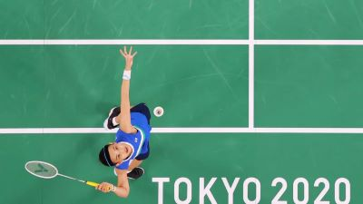
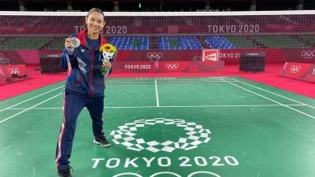
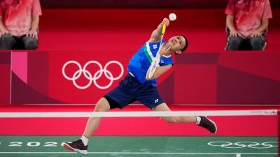
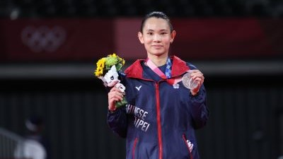
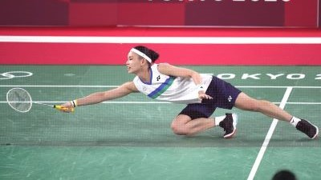
奧運最後一舞
戴資穎：「就是打到2024年底的賽季結束，就算那時候還能打，我也想要休息了。」
戴資穎：「就是打到2024年底的賽季結束，就算那時候還能打，我也想要休息了。」
巴黎奧運很可能是「麟洋配」最後一次搭檔！
李洋曾在訪問對戴資穎退休一事做出回應，表示自己也不遠了！
李洋曾在訪問對戴資穎退休一事做出回應，表示自己也不遠了！
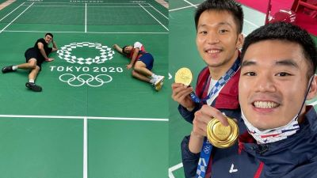
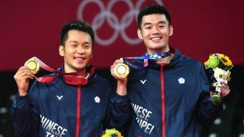
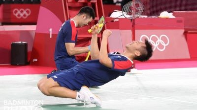
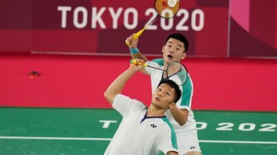
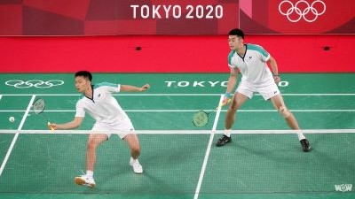
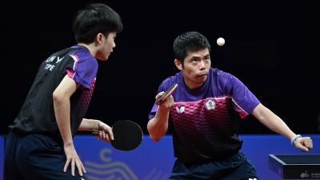
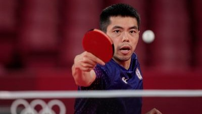
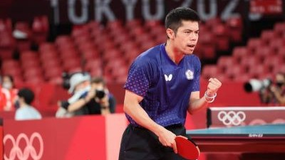

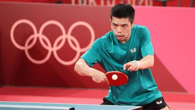
今年奧運很可能會是「桌球教父」的最後一舞
台灣老將莊智淵曾在訪談中表達了巴黎奧運的參戰意願，更聲稱人生不該設限！
台灣老將莊智淵曾在訪談中表達了巴黎奧運的參戰意願，更聲稱人生不該設限！
上一屆:東京奧運
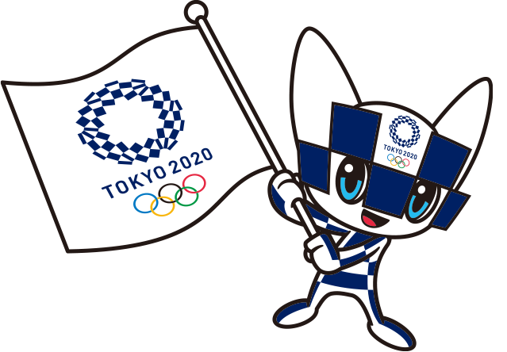| 2 |
|
|
|---|---|---|
| 4 |
|
|
| 6 |
|
|